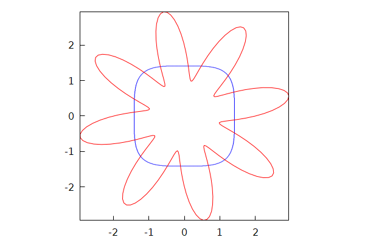
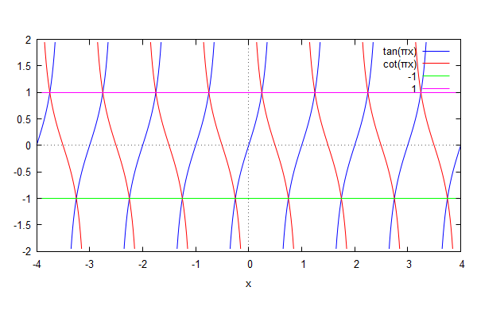
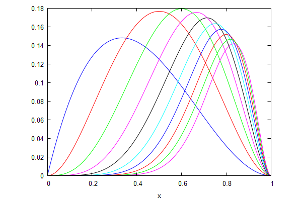
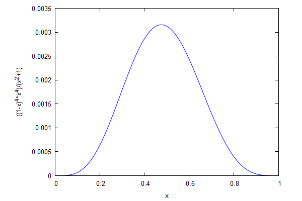

\( \DeclareMathOperator{\abs}{abs} \newcommand{\ensuremath}[1]{\mbox{$#1$}} \)
Lab sheet 9
| --> | x_1 : sin ( θ ) · sin ( φ ) ; x_2 : sin ( θ ) · cos ( φ ) ; x_3 : cos ( θ ) ; |
\[\operatorname{(x\_ 1) }\sin{\left( \theta \right) } \sin{\left( \phi \right) }\]
\[\operatorname{(x\_ 2) }\sin{\left( \theta \right) } \cos{\left( \phi \right) }\]
\[\operatorname{(x\_ 3) }\cos{\left( \theta \right) }\]
| --> | trigsimp ( x_1 ^ 2 + x_2 ^ 2 + x_3 ^ 2 ) ; |
\[\operatorname{ }1\]
| --> | kill ( x_1 , x_2 , x_3 ) $ |
| --> | u : 8 − ( x − y ) ^ 2 · ( x + y ) ^ 2 · ( 16 − 4 · x ^ 2 − y ^ 4 ) ; |
\[\operatorname{(u) }8-{{\left( x-y\right) }^{2}} {{\left( y+x\right) }^{2}} \left( -{{y}^{4}}-4 {{x}^{2}}+16\right) \]
| --> | ut : trigsimp ( subst ( [ x = 2 · cos ( t ) , y = 2 · sin ( t ) ] , u ) ) ; |
\[\operatorname{(ut) }1024 {{\cos{(t)}}^{8}}-2048 {{\cos{(t)}}^{6}}+1280 {{\cos{(t)}}^{4}}-256 {{\cos{(t)}}^{2}}+8\]
| --> | expand ( demoivre ( expand ( exponentialize ( ut ) ) ) ) ; |
\[\operatorname{ }8 \cos{\left( 8 t\right) }\]
| --> | kill ( u , ut ) $ |
| --> | solve ( [ a · x + b · y + c · z = 1 , a · y + b · z + c · x = 1 , a · z + b · x + c · y = 1 ] , [ x , y , z ] ) ; |
\[\operatorname{ }[[x=\frac{1}{c+b+a},y=\frac{1}{c+b+a},z=\frac{1}{c+b+a}]]\]
| --> | sol : x = find_root ( x ^ 4 + sin ( x ) = 10 ^ 4 , x , 9 , 11 ) ; |
\[\operatorname{(sol) }x=10.00013603103571\]
| --> | kill ( sol ) $ |
| --> | f ( x ) : = ( exp ( x ) + x ^ 7 ) / ( exp ( x ) − x ^ 7 ) ; |
\[\operatorname{ }\operatorname{f}(x):=\frac{\operatorname{exp}(x)+{{x}^{7}}}{\operatorname{exp}(x)-{{x}^{7}}}\]
| --> | ev ( f ( 5 ) , numer ) ; |
\[\operatorname{ }-1.003806608242687\]
| --> | ev ( makelist ( f ( n ) , n , 0 , 50 ) , numer ) ; |
\[\operatorname{ }[1,2.163953413738653,-1.122527124984471,-1.018538375432382,-1.00668709736398,-1.003806608242687,-1.002886452850567,-1.002666759080327,-1.002846909757836,-1.003394057160977,-1.004415017883,-1.00616391895918,-1.009125826271153,-1.014201285793522,-1.023080201542143,-1.03901199828856,-1.068473380305326,-1.125095655187961,-1.240266252874127,-1.498979413095564,-2.220795044726118,-6.469168971016049,5.57447443505918,2.074081155298447,1.418805146974869,1.185231789718942,1.085582358535603,1.040109647695872,1.018834821691931,1.008814258689556,1.004101417888083,1.001896026641538,1.000870653683825,1.000397187810439,1.000180056634066,1.000081136647257,1.000036354154339,1.000016201295815,1.000007183339945,1.00000316955388,1.000001392101691,1.000000608756157,1.000000265098241,1.000000114986403,1.000000049686858,1.000000021392715,1.000000009178858,1.000000003925314,1.000000001673337,1.000000000711169,1.000000000301367]\]
| --> | kill ( f ) $ |
| --> |
wxdraw2d
(
ip_grid = [ 100 , 100 ] , proportional_axes = xy , implicit ( x ^ 4 + y ^ 4 = 4 , x , − 2 , 2 , y , − 2 , 2 ) , color = red , nticks = 200 , parametric ( ( 2 + sin ( 8 · t ) ) · cos ( t ) , ( 2 + sin ( 8 · t ) ) · sin ( t ) , t , 0 , 2 · %pi ) ) ; |
\[\operatorname{ }\]

\[\operatorname{ }\]
| --> | wxplot2d ( [ tan ( %pi · x ) , cot ( %pi · x ) , − 1 , 1 ] , [ x , − 4 , 4 ] , [ y , − 2 , 2 ] , [ same_xy ] , [ legend , "tan(πx)" , "cot(πx)" , "-1" , "1" ] ) ; |
\[\]\[plot2d: some values were clipped. \]\[cot: argument 0.0 isn't in the domain of cot. \]\[plot2d: expression evaluates to non-numeric value somewhere in plotting range. \]\[plot2d: some values were clipped.\]
\[\operatorname{ }\]

\[\operatorname{ }\]
| --> |
f
(
t
)
:
=
(
(
2
+
sqrt
(
3
)
)
·
t
−
1
)
/
(
2
+
sqrt
(
3
)
+
t
)
;
g ( t ) : = f ( f ( f ( t ) ) ) ; h ( t ) : = g ( g ( t ) ) ; |
\[\operatorname{ }\operatorname{f}(t):=\frac{\left( 2+\sqrt{3}\right) t-1}{2+\sqrt{3}+t}\]
\[\operatorname{ }\operatorname{g}(t):=\operatorname{f}\left( \operatorname{f}\left( \operatorname{f}(t)\right) \right) \]
\[\operatorname{ }\operatorname{h}(t):=\operatorname{g}\left( \operatorname{g}(t)\right) \]
| --> | factor ( g ( t ) ) ; |
\[\operatorname{ }\frac{t-1}{t+1}\]
| --> | factor ( h ( t ) ) ; |
\[\operatorname{ }-\frac{1}{t}\]
| --> | kill ( f , g , h ) $ |
| --> | y : sin ( 10 · x ) ; |
\[\operatorname{(y) }\sin{\left( 10 x\right) }\]
| --> | ( diff ( y , x , 8 ) / y ) ^ ( 1 / 8 ) ; |
\[\operatorname{ }10\]
| --> | kill ( y ) $ |
| --> | wxplot2d ( makelist ( n ^ ( 3 / 2 ) · x ^ n · ( 1 − x ) ^ 2 , n , 1 , 10 ) , [ x , 0 , 1 ] , [ legend , false ] ) ; |
\[\operatorname{ }\]

\[\operatorname{ }\]
| --> |
y
:
x
^
4
·
(
1
−
x
)
^
4
/
(
1
+
x
^
2
)
;
Y : integrate ( y , x ) ; Y1 : integrate ( y , x , 0 , 1 ) ; dydx : factor ( diff ( y , x ) ) ; |
\[\operatorname{(y) }\frac{{{\left( 1-x\right) }^{4}} {{x}^{4}}}{{{x}^{2}}+1}\]
\[\operatorname{(Y) }\frac{3 {{x}^{7}}-14 {{x}^{6}}+21 {{x}^{5}}-28 {{x}^{3}}+84 x}{21}-4 \operatorname{atan}(x)\]
\[\operatorname{(Y1) }-\frac{7 \ensuremath{\pi} -22}{7}\]
\[\operatorname{(dydx) }\frac{2 {{\left( x-1\right) }^{3}} {{x}^{3}} \left( 3 {{x}^{3}}-{{x}^{2}}+4 x-2\right) }{{{\left( {{x}^{2}}+1\right) }^{2}}}\]
| --> | wxplot2d ( y , [ x , 0 , 1 ] ) ; |
\[\operatorname{ }\]

\[\operatorname{ }\]
| --> |
x0
:
find_root
(
dydx
=
0
,
x
,
0
.
4
,
0
.
6
)
;
y0 : subst ( x = x0 , y ) ; |
\[\operatorname{(x0) }0.4758084109946591\]
\[\operatorname{(y0) }0.003155431532237104\]
| --> | kill ( y , Y , Y1 , dydx , x0 , y0 ) $ |
| --> | a ( n ) : = ev ( ( 1 + 1 / n ) ^ n / %e , numer ) ; |
\[\operatorname{ }\operatorname{a}(n):=\operatorname{ev}\left( \frac{{{\left( 1+\frac{1}{n}\right) }^{n}}}{\% e},\ensuremath{\mathrm{numer}}\right) \]
| --> | makelist ( a ( n ) , n , 1 , 100 ) ; |
\[\operatorname{ }[0.7357588823428847,0.8277287426357453,0.8720105272211965,0.8981431669224667,0.9154017710557233,0.9276545004796607,0.9368048854905844,0.9438993731583948,0.9495611399412655,0.9541845267642307,0.9580312771960848,0.9612819623291116,0.9640651901687884,0.9664750464046482,0.9685819513499304,0.9704396614614473,0.9720899236857493,0.9735656521670923,0.9748931471696253,0.9760936770299999,0.9771846267433955,0.9781803456505889,0.9790927823505035,0.9799319666491794,0.9807063798821212,0.9814232426540106,0.9820887407123358,0.9827082039374673,0.9832862494232272,0.9838268967814625,0.9843336617643861,0.9848096328171129,0.9852575340843213,0.9856797775875416,0.9860785066841156,0.9864556324613855,0.9868128643707109,0.9871517361375783,0.9874736277763886,0.9877797843765491,0.9880713321989589,0.9883492925218782,0.9886145935948457,0.9888680809955271,0.9891105266331032,0.9893426366000891,0.9895650580407751,0.989778385177274,0.9899831646109862,0.9901798999993416,0.9903690561920574,0.9905510628982734,0.990726317945581,0.9908951901829771,0.9910580220722558,0.9912151320063,0.9913668163870129,0.991513351491757,0.9916549951528847,0.9917919882716965,0.9919245561858359,0.9920529099061656,0.9921772472375939,0.9922977537962596,0.9924146039341295,0.9925279615807366,0.9926379810104525,0.9927448075430686,0.9928485781841898,0.9929494222114065,0.9930474617117014,0.9931428120744271,0.9932355824444854,0.9933258761390106,0.9934137910312705,0.9934994199045314,0.9935828507787468,0.9936641672122947,0.9937434485811688,0.9938207703374037,0.9938962042486263,0.9939698186201866,0.9940416785015155,0.9941118458777859,0.9941803798482985,0.9942473367924642,0.9943127705244921,0.9943767324376637,0.9944392716389356,0.9945004350747053,0.9945602676483414,0.99461881233009,0.9946761102599984,0.9947322008444074,0.9947871218461912,0.994840909469687,0.9948935984401793,0.9949452220787183,0.9949958123724068,0.995045400040381]\]
| --> | first ( sublist ( makelist ( n , n , 1 , 100 ) , lambda ( [ n ] , a ( n ) > 0 . 99 ) ) ) ; |
\[\operatorname{ }50\]
Created with wxMaxima.
The source of this Maxima session can be downloaded here.